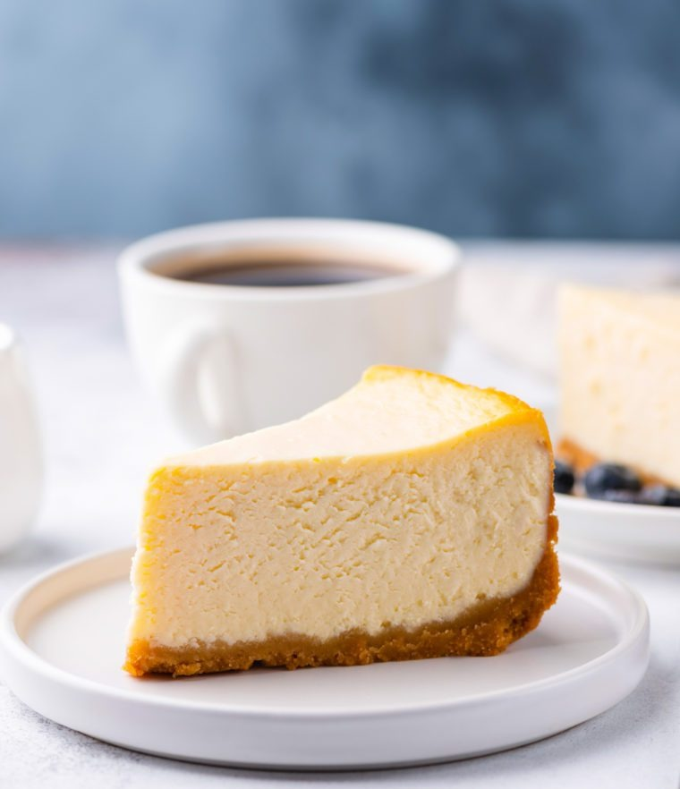

Welcome to Wolverine World, your go-to destination for all things pets, recipes, and travel! Explore a world of captivating content where we cater to your love for furry companions, culinary delights, and globetrotting adventures.
Double Chocolate Chip Cookies

Ingredients
Origin: Michigan
Source: Family Recipe
Category: Dessert My daughter learned to make these cookies at a baking camp at Zingermanns and has tweaked the recipe to fit the taste buds of her siblings. They are extremely sugary so the salt helps to balance it. Note, these cookies are best eaten very quickly.
Unsalted butter
Granulated Sugar
Packed light or dark brown sugar
Large egg
Pure vanilla extract
Semi-sweet chocolate chunks (melted)
All-purpose flour
Natural unsweetened cocoa powder
Baking soda
Salt
Semi-sweet chocolate chunks
Recipe Steps
Recipe Steps
In a mixing bowl cream together the butter, granulated sugar, and brown sugar
Add the egg and vanilla extract and beat well
Add the melted chocolate
In a separate bowl combine the flour, baking soda, cocoa powder and salt
Combine the wet and dry ingredients
Add the unmelted chocolate chunks.
Form 15 cookies and place on a baking sheet.
Cooke for 12 to 13 minutes at 350 degrees.
Chocolate Chip Banana Bread

Ingredients
Cooking spray
2 cups (240 g) all-purpose flour
1 tsp. baking soda
1/2 tsp. kosher salt
1 large egg plus 1 egg yolk
1 cup (200 g) granulated sugar
1/2 cup (1 stick) unsalted butter, melted
1/4 cup sour cream
1 tsp. pure vanilla extract
3 ripe bananas, mashed
1/2 cup chopped toasted walnuts
1/2 cup semisweet chocolate chips
Recipe Steps
Preheat the oven to 350º. Line a 9"-by-5" loaf pan with parchment and grease with cooking spray.
In a medium bowl, whisk flour, baking soda, and salt.
In a large bowl, mix egg, egg yolk, granulated sugar, butter, sour cream, and vanilla. Add bananas and stir until combined. Gradually add dry ingredients to banana mixture until just combined.
Fold in walnuts and chocolate chips and transfer to prepared pan.
Bake bread until a tester inserted into the center comes out clean, about 1 hour. Let cool 10 minutes in pan, then invert onto a wire rack and let cool completely.
Classic New York Cheese Cake
Ingredients
1½ cups graham cracker crumbs, from 12 whole crackers
5 tablespoons unsalted butter, melted
2 tablespoons sugar
⅛ teaspoon salt
32 oz (four 8-oz blocks) cream cheese, at room temperature
2 cups sugar
3 tablespoons all-purpose flour
4 teaspoons vanilla extract
1 teaspoon packed lemon zest, from 1 lemon
2 teaspoons fresh lemon juice, from 1 lemon
¼ teaspoon salt
6 large eggs
½ cup sour cream
Recipe Steps
Preheat the oven to 375°F
Make the crust: In a medium bowl, combine the graham cracker crumbs, melted butter, sugar, and salt.
Reduce the oven temperature to 325°F.
Set a kettle of water to boil.
Make the batter.
Check to make sure your oven has cooled to 325°F
Then set the cheesecake pan in a large roasting pan
Pour the batter on top of the crust.
Pour the boiling water into the large roasting pan to come about 1 inch up the side of the cake pan.
Bake until the cake is just set, 1 hour and 30 minutes to 1 hour and 45 minutes.
If the cheesecake starts to look too golden on top towards the end, cover it loosely with foil.
The cake should not look liquidy at all but will wobble just a bit when the pan is nudged; it will continue to cook as it cools.
Carefully remove the roasting pan from the oven and set it on a wire rack. Cool the cheesecake in the water bath until the water is just warm, about 45 minutes.
Remove the springform pan from the water bath and discard the foil.
If necessary, run a thin-bladed knife around the edge of the cake to make sure it's not sticking to the sides (which can cause cracks as it cools), then cover with plastic wrap and transfer to the refrigerator to cool for at least 8 hours or overnight.
Origin: American Source: https://www.delish.com/cooking/recipe-ideas/a43369646/chocolate-chip-banana-bread-recipe/ Category: Dessert